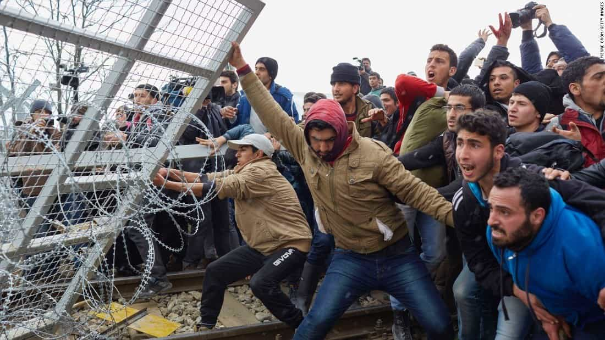
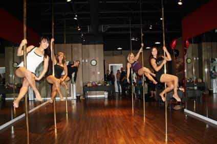

Themis is an independent mature (50+) gentleman and avid reader of ROK. He has decided to continue gaming until he is 60, when he will retreat to his estates.


The tide of globalism and multiculturalism sweeps the civilized world, and Greece is no exception. Often in the news for the wrong reasons (economic problems, leftism, third world invasion), the country nevertheless has many advantages that merit the attention of an upstanding man. He may well consider that a short or longer stay be worthwhile.
Most people in the country use the public healthcare system, not only because it is completely free for residents (and very low cost for foreigners). The doctors and other staff in public hospitals are generally competent and experienced, as they see tens of cases each day. There are administrative problems, but the core of the system is sound.
Compared to the arcane, legalistic and people – squashing Anglo-Saxon legal mechanism, the justice system of the country is good. Just avoid the lawyers whenever possible, because, although cheap, as a rule they do not know what they are doing. Whenever I went to a court, told the truth, and told it in a simple, understandable way, I was given justice.

Except for immigrants and Roma (gypsies), which make up already more than 10% of the population, people are basically peaceful and upstanding. Again notwithstanding the aforementioned two categories, criminality is low. You just have to use some psychological tricks, which you learn quickly, to have your work done. Pretty much everybody speaks English.
There is sunshine most of the year, with the exception of the North of the country.
Most people live under dire financial straits, and salaries almost never exceed 20,000 EUR net per year. Private and public sector workers are paid the same, but the latter do generally nothing. Self-employed professionals (doctors, engineers, etc.) earn more, but nowhere close to what their Western counterparts make.
Don’t come here looking for a job, but if you have a (net) passive income of 25,000 EUR, you will find out that you can live like a king (okay, like a prince, but you get it). With the exception of branded items, which as a ROK reader you have no need for, products and services in the country cost roughly 50% less than in the West. (If you go to Mykonos in the high season, you just asked for it.)
The Royal Decree of 18/02/1954, byour beloved King Pavlos, made sure that virtually all buildings are made of reinforced concrete, with very high safety factors. As a result, houses are extremely resilient, comfortable, spacious, and cheap.
If you have 500,000 EUR or more to invest, you will find out that the state can give you the same amount, to set up a business. For the price of a third-rate apartment in London or New York, you may become a mighty industrialist.

A red-pilled gamer will face the same difficulties with those in Western nations, namely dwindling pool of attractive females, due to promiscuity induced gravitation towards the ultra rich, obesity, bitchiness, body deformation, etc. However, with the pitiful income of most girls, you can apply a reasonable amount of provider game. ‘Reasonable’ is the keyword here—I don’t want you to turn into a sugar daddy.

I follow Mr. Valizadeh’s game advice to the letter, with one exception—I do dinner dates. A nice dinner for two, often with the accompaniment of live music, doesn’t cost more than 30 EUR. Even the famous Gazarte night club, frequented by artsy, cute girls offers 8 EUR drinks. Now, if you go to bouzoukia, reserve bottle service, and park your BMW in front, you’re asking to be ripped off.

In days when game fails, you can have your needs catered for by honest, not ugly Venus priestesses, for a price between 20 (avoid) and 50 EUR. Your health will not be at risk, as long as you don’t do something silly.
Greece is an interesting place for men with the mindset of ROK readers. Avoid August when the weather is very hot, and opportunities are stifled by the tourist wave, and visit us from September to see for yourselves.
Read More: How Did The Situation In Greece Get To Be So Bad?